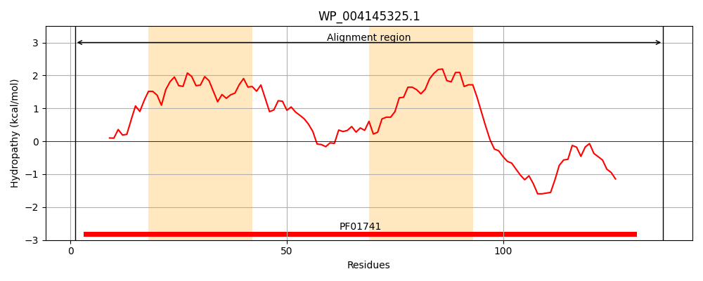
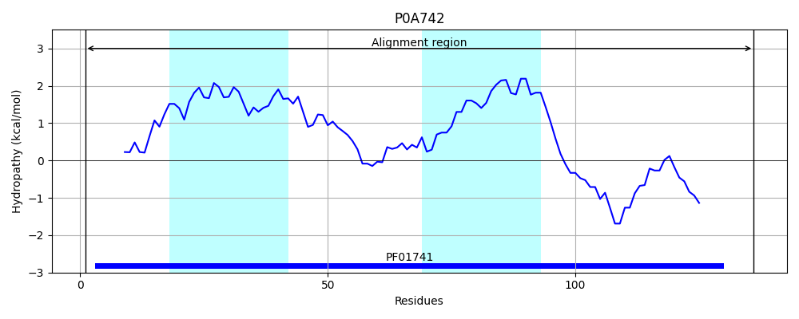
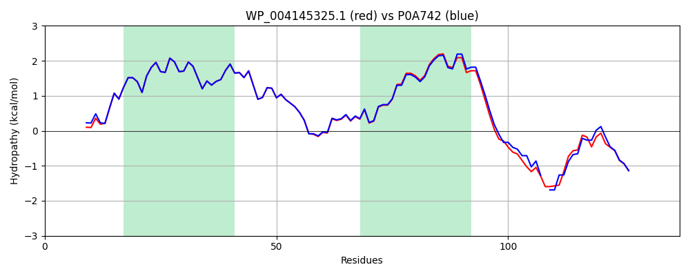

Hit Accession: P0A742
Hit TCID: 1.A.22.1.1
Hit Description: gnl|BL_ORD_ID|8609 gnl|TC-DB|P0A742|1.A.22.1.1 Large-conductance mechanosensitive channel - Escherichia coli.
Mach Len: 137
e:0.000000
Query TMS Count : 2
Hit TMS Count: 2
TMS-Overlap Score: 2.500000
Predicted Substrates:CHEBI:24870;ion, CHEBI:25728;osmolyte
BLAST Alignment:
Score: 631 , Bit scores: 247 bits, E-value: 2.4e-86, Alignment length: 137, Percentage identity: 93
Query: 1 MSFLKEFREFAMRGNVVDLAVGVIIGAAFGKIVSSLVADIIMPPLGLLIGGIDFKQFAVTLRDAQGDVPAVVMHYGVFIQNVFDFIIVAFAIFMAIKLMNKLNRKKEEAPAAPPAPSKEEVLLSEIRDLLKEQNNRS 137
MS +KEFREFAMRGNVVDLAVGVIIGAAFGKIVSSLVADIIMPPLGLLIGGIDFKQFAVTLRDAQGD+PAVVMHYGVFIQNVFDF+IVAFAIFMAIKL+NKLNRKKEE PAA PAP+KEEVLL+EIRDLLKEQNNRS
Sbjct: 1 MSIIKEFREFAMRGNVVDLAVGVIIGAAFGKIVSSLVADIIMPPLGLLIGGIDFKQFAVTLRDAQGDIPAVVMHYGVFIQNVFDFLIVAFAIFMAIKLINKLNRKKEE-PAAAPAPTKEEVLLTEIRDLLKEQNNRS 136 | Protein Hydropathy Plots: |
|---|
|  |  |
Pairwise Alignment-Hydropathy Plot:
|
|---|
|  |